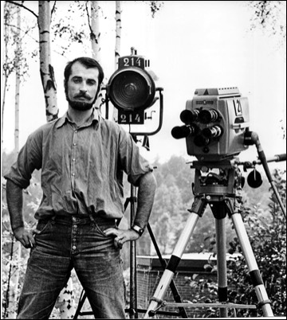

Jag ber om ursäkt för den tillfälliga oordningen. Denna sida är för närvarande under utveckling och kommer att bli en del av ett historieprojekt om Linköpings Universitet. Projektet leds av mig, Tyson Horvath, civilingenjörsstudent inom mjukvaruteknik vid LiTH. Om du har synpunkter eller önskar bidra till projektet, är du varmt välkommen att kontakta mig på isak.horvath@d-sektionen.se. Alla typer av material som på något sätt relaterar till universitetets historia, dess föreningar eller utbildningar är mycket uppskattade.
Tack för ditt bidrag!
//Tyson
I slutet av 1960-talet handlade det om bandade tv-program. Såväl fackpedagoger som skolpolitiker trodde att videobandspelaren skulle revolutionera undervisningen, framför allt inom gymnasieskolan, samt vid universitet och högskolor. 1967 startades TRU, kommittén för television och radio i utbildningen, av staten som försöksverksamhet med att erbjuda radio- och tv-baserade läromedel till gymnasier, högskolor och universitet. TRU fick avsevärda belopp till sitt förfogande.
Staten och ecklesiastikdepartementet under ledning av dåvarande ecklesiastikminister Ragnar Edenman (S), formade organisationen TRU, kommittén för television och radio i utbildningen, som fick uppdraget att utveckla och producera multimedia-läromedel, där tv-program i form av tv-kassetter (videokopior) skulle vara bärande komponenter. I första hand drev man försöksverksamhet inom högskola/ universitet och gymnasieskolan. För gymnasieskolans vidkommande var målsättningen att ersätta en tredjedel av lärarkåren med de nya ”självgående” läromedlen. Mängder av program och läromedelspaket producerades men man lyckades inte få något större gehör hos utbildningsanordnarna och i mitten av 1970-talet avvecklades verksamheten.
TRU, kommittén för television och radio i utbildningen, startades 1967 av staten som försöksverksamhet med att sända trådlösa läromedel till universitet och förskolor. Placeringen var i Stocksund och verksamheten fortsatte till 1978 då den övertogs av det nystartade Sveriges Utbildningsradio AB.
1978 gjordes en omfattande omorganisation där Sveriges Radio klövs i fyra dotterbolag som ägdes av Sveriges Radio. Det nybildade Sveriges Utbildningsradio var ett av dessa (de övriga var Sveriges Television, Sveriges Riksradio och Sveriges Lokalradio).
År 1978 resulterade ett mångårigt utredningsarbete om utbildningsverksamhet genom radio och TV (TRU-kommittén) i beslut om ett nytt bolag, Sveriges Utbildningsradio AB. Detta bolag tog över TRU-kommitténs projektverksamhet samt delar av Sveriges Radios vid den tiden skattefinansierade utbildningsprogramverksamhet. Utbildningsradion kom att organiseras som ett dotterbolag i Sveriges Radiokoncernen.
Den 15 augusti 1967 anställdes Lars Ag som chef för TRU efter ett samtal på utbildningsdepartementet. Övrig personal, ett tiotal medarbetare anställdes 1 september 1967.
Informationen på denna sida kommer i huvudsak från arkiverade dokument från riksdagen.